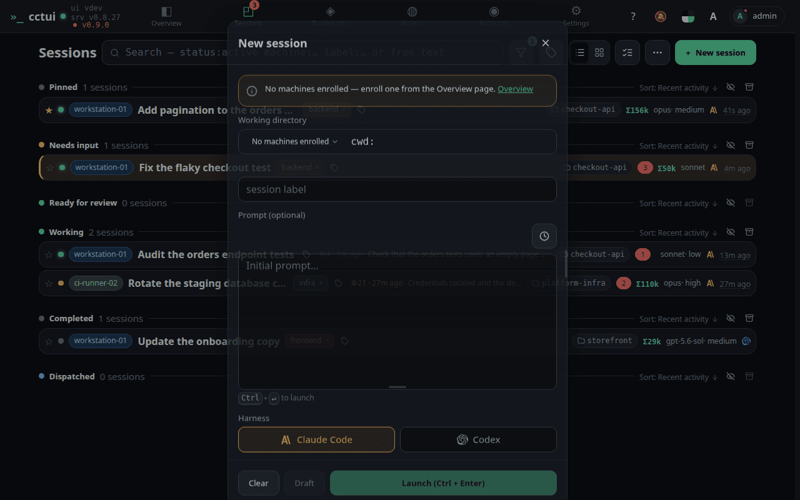
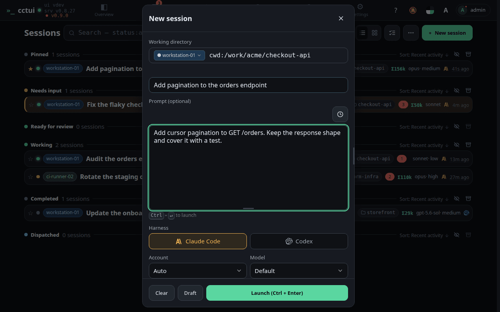
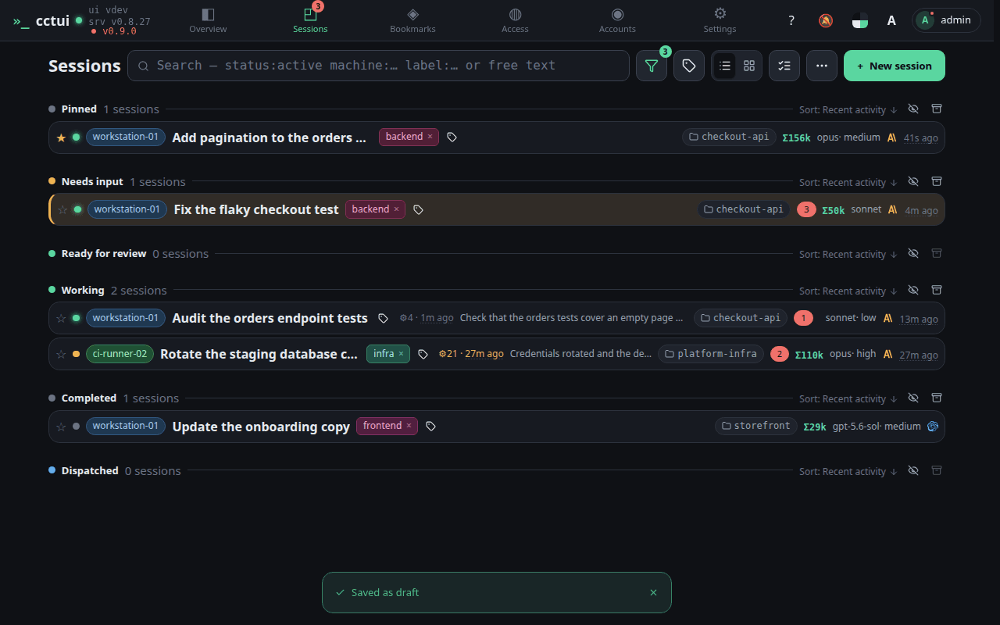
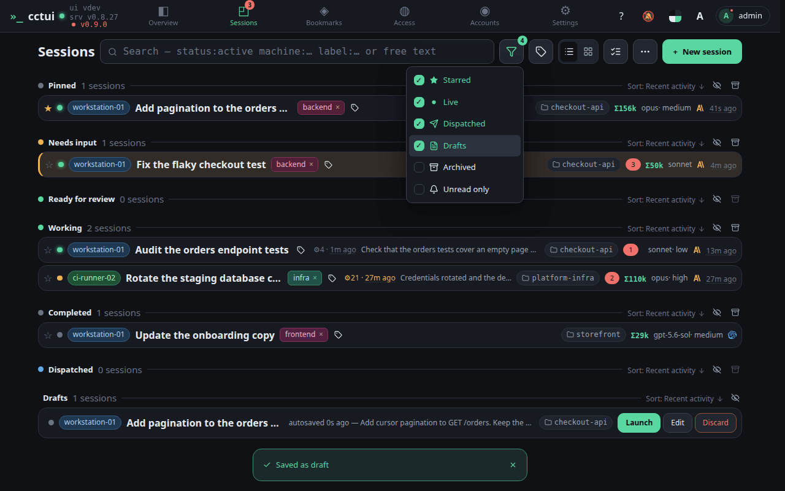

Start a new agent
viewport=desktop theme=dark

Open the new-session dialog Everything a run needs is in this one dialog: the machine, the folder, the prompt and the profile.

Say what you want done Say what you want done. The profile below decides which harness and model carry it out.

Save it as a draft This saves a draft on your instance. Nothing runs until you launch it, and you can delete it from the list.

The draft is waiting Your draft is here, holding the machine, folder, profile and prompt until you launch it.